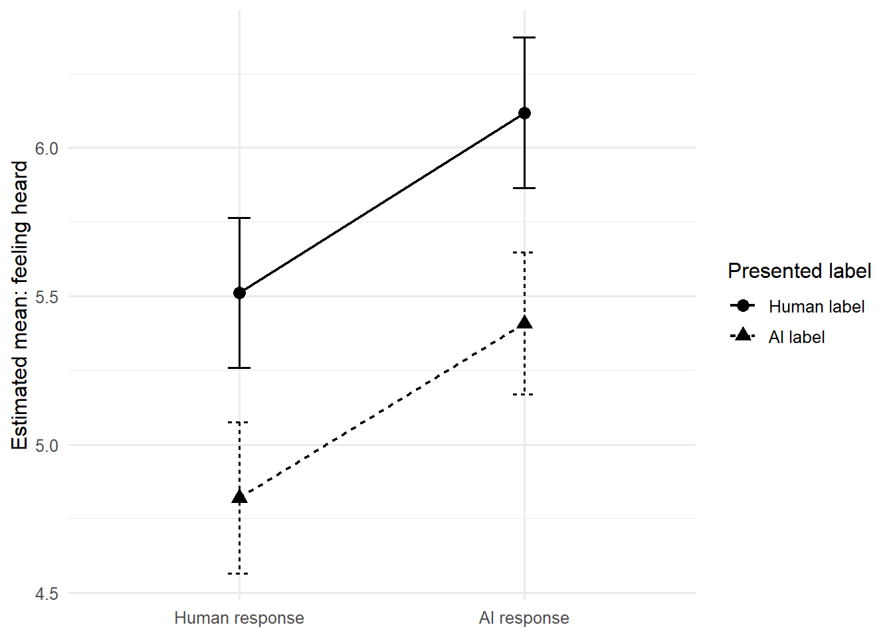
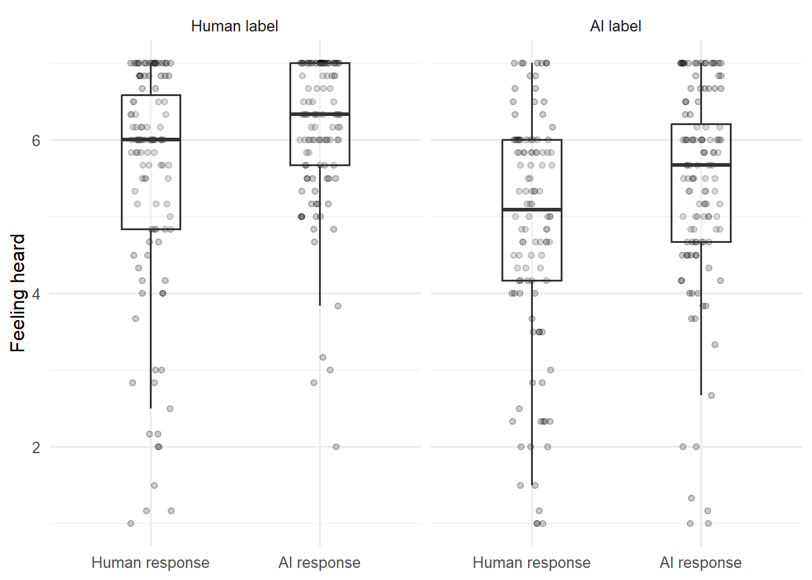
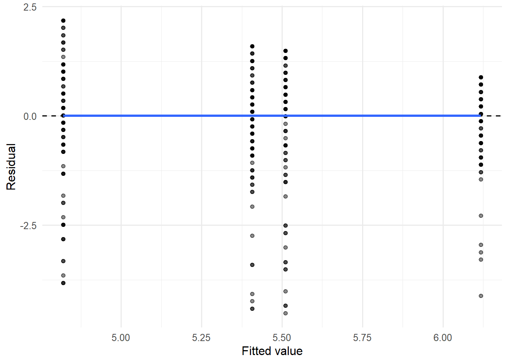
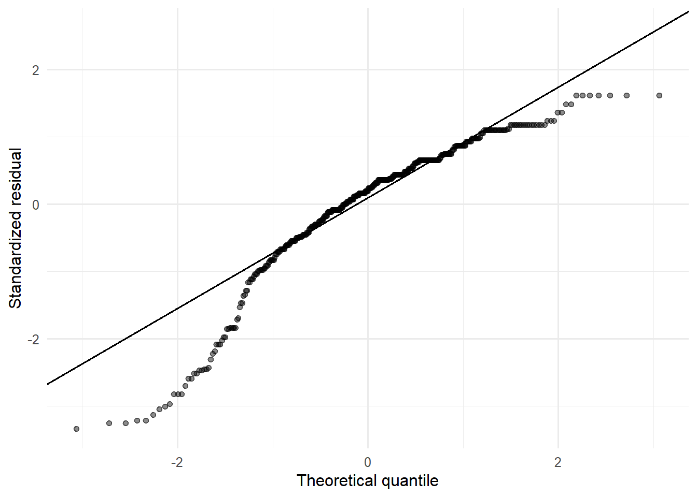
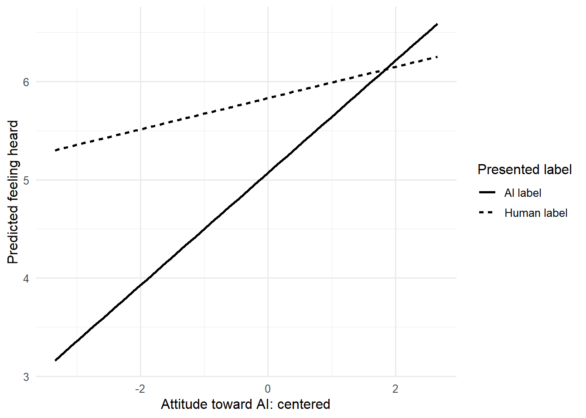

flowchart LR
A["Paper Claim<br>논문이 무엇을 주장하는가?"] --> B["Design<br>누가 무엇을 경험했는가?"]
B --> C["Estimand<br>어떤 평균적 차이를 알고 싶은가?"]
C --> D["Operationalization<br>어떤 변수로 측정했는가?"]
D --> E["Analysis Sample<br>누가 포함·제외되었는가?"]
E --> F["Model & Contrast<br>어떤 비교를 계산했는가?"]
F --> G["Estimate + Uncertainty<br>크기와 정밀도"]
G --> H["Claim Boundary<br>어디까지 말할 수 있는가?"]
논문 복기와 재현가능한 분석
논문의 주장, 설계, 코드, 결과를 역으로 연결하기
10주차 학습목표
Note
이번 주 학습을 마치면 다음을 할 수 있어야 합니다.
- 논문의 핵심 주장을 연구질문–설계–estimand–변수–모형–결과로 분해한다.
- 재현(reproduction), 강건성 검토(robustness check), 확장(extension)을 구분한다.
- 공개 데이터와 코드를 불러오기 전에 파일, 변수, 표본, 조건 코딩을 감사한다.
- 2×2 요인실험을 하나의 선형모형으로 표현하고 주효과, 단순효과, 상호작용을 구분한다.
- omnibus test보다 원단위 추정치, 신뢰구간, 계획된 contrast를 중심으로 결과를 해석한다.
- 여러 결과변수와 후속분석에서 다중검정 문제를 확인하고 분석군(family)을 명시한다.
- 논문, 코드, 표와 그림 사이의 불일치를 체계적으로 기록한다.
- GenAI를 결과 생성기가 아니라 재현성 reviewer와 claim auditor로 활용한다.
오늘의 핵심 질문
논문의 한 문장을 데이터와 코드까지 거꾸로 추적했을 때, 같은 주장에 도달하는가?
Important
논문 복기는 코드를 그대로 다시 실행하는 활동이 아닙니다. 논문의 주장과 분석 선택이 서로 맞물리는지 감사하는 활동입니다.
1. 논문 복기의 세 수준
| 수준 | 핵심 질문 | 산출물 |
|---|---|---|
| Reproduction | 같은 데이터와 같은 분석으로 같은 결과가 나오는가? | 표·계수·그림의 일치 여부 |
| Robustness | 합리적인 대안 선택에서도 결론이 유지되는가? | 대안 SE, contrast, 결측 처리, 모형 진단 |
| Extension | 원 논문이 묻지 않은 후속 질문에 답할 수 있는가? | 새 가설과 별도의 분석 계획 |
Warning
원 논문의 분석을 바꾼 뒤 결과가 달라졌다고 해서 곧바로 “재현 실패”라고 부르면 안 됩니다. 먼저 동일 분석의 재현과 대안 분석의 강건성 검토를 분리합니다.
Paper Reconstruction Canvas
논문을 읽으면서 아래 표를 먼저 채웁니다.
| 항목 | 이번 논문에서 확인할 내용 |
|---|---|
| 핵심 현상 | 사람들이 AI·인간 응답을 어떻게 평가하는가? |
| 주요 조작 | 실제 응답 출처, 제시된 출처 라벨 |
| 주요 결과 | Feeling heard, accuracy, understood, connection |
| 단위 | 한 참가자의 한 응답 평가 |
| 주요 설계 | 2(response) × 2(label) 집단 간 요인설계 |
| 1차 estimand | AI 응답과 인간 응답의 평균 차이, AI 라벨과 인간 라벨의 평균 차이 |
| 상호작용 estimand | 실제 출처 효과가 라벨에 따라 달라지는가? |
| 일반화 범위 | 모집 절차와 연구 상황이 포괄하는 참여자·상호작용 |
2. GenAI를 재현성 reviewer로 활용하기
이번 주의 순서는 다음과 같습니다.
Read → Reconstruct → Run → Compare → Audit → Explain
좋은 질문 방식
다음은 한 논문의 주장, 연구설계, R 모형식이다.
주장:
“AI-generated responses increased feeling heard, whereas an AI label reduced it.”
설계:
2(response source: human vs AI) × 2(label: human vs AI), between-subjects
모형:
feel_heard ~ response * label
다음을 reviewer처럼 점검하라.
1. 이 모형에서 직접 추정되는 estimand를 원단위로 설명하라.
2. 주효과 해석이 상호작용에 의해 어떻게 달라질 수 있는지 질문하라.
3. 논문의 문장이 인과, 모집단 일반화, 실질적 중요성을 과장하는지 확인하라.
4. 결과를 보기 전에 필요한 표본·결측·코딩 감사를 제안하라.
5. 최종 결론을 대신 쓰지 말고 내가 확인해야 할 출력 목록을 만들어라.GenAI가 해서는 안 되는 일
- 보지 못한 원문·부록·코드의 내용을 만들어내기
- 통계적으로 유의하지 않은 결과를 “효과가 없다”고 단정하기
- 겹치는 error bar만 보고 상호작용 여부를 판단하기
- 공개되지 않은 참여자 자료를 업로드하도록 요구하기
- 다른 분석을 실행한 뒤 그것을 원 논문의 “재현”이라고 부르기
민감한 연구자료를 입력하지 않기
실제 음성, 자유응답, 개인식별자, IRB 제한자료는 공개형 GenAI에 입력하지 않습니다. 변수명, 합성 예시, 집계표, 최소 재현 코드만 사용합니다.
3. 분석 환경과 재현성 기록
한 번만 설치할 패키지
아래 코드는 R Console에서 한 번 실행합니다.
# install.packages(c(
# "tidyverse", "broom", "emmeans", "effectsize",
# "sandwich", "lmtest"
# ))이 문서에서 사용할 패키지
library(tidyverse)
library(broom)
library(emmeans)
theme_set(theme_minimal(base_size = 12))분석 시작 전에 남길 기록
# Git commit 또는 분석 버전
analysis_version <- "week10-reproduction-v1"
# R과 패키지 버전
sessionInfo()
Tip
완성된 숫자보다 먼저 다음을 기록합니다.
- 원자료 파일명과 내려받은 날짜
- 코드 버전 또는 commit
- 분석 표본 정의
- 제외 기준
- 주요 결과변수와 계획된 contrast
- 사용한 패키지 버전
Part I. 논문을 분석 가능한 명세로 바꾸기
4. 연구질문에서 estimand까지
조작과 조건
- Response source: 실제 응답이 인간 또는 AI에 의해 작성됨
- Response label: 참가자에게 인간 또는 AI가 작성했다고 안내함
네 개의 조건은 다음과 같습니다.
| 실제 응답 | 제시 라벨 | 셀 |
|---|---|---|
| Human | Human | Human response / Human label |
| Human | AI | Human response / AI label |
| AI | Human | AI response / Human label |
| AI | AI | AI response / AI label |
세 가지 서로 다른 질문
Response main effect
라벨을 평균냈을 때 AI 응답과 인간 응답의 평균 차이는 얼마인가?Label main effect
실제 응답 출처를 평균냈을 때 AI 라벨과 인간 라벨의 평균 차이는 얼마인가?Interaction
AI–인간 응답의 차이가 라벨에 따라 달라지는가?
상호작용은 차이의 차이입니다.
\[ \big(\bar Y_{AI\ response,AI\ label}-\bar Y_{Human\ response,AI\ label}\big) - \big(\bar Y_{AI\ response,Human\ label}-\bar Y_{Human\ response,Human\ label}\big) \]
Note
주효과와 상호작용은 서로 다른 estimand입니다. 상호작용이 포함된 모형에서 회귀계수의 주효과는 factor의 기준 수준에서의 조건부 효과이고, marginal main effect와 자동으로 같지 않습니다.
5. 원자료 불러오기와 구조 감사
raw <- readr::read_csv(
"data/Being Heard by AI OSF.csv",
show_col_types = FALSE
)
glimpse(raw)Rows: 455
Columns: 117
$ id <chr> "614ea93d581d6f4281e9d232", "5dd5378596afdf4eb31…
$ happiness_d <dbl> 2, 4, 4, 2, 2, 1, 2, 2, 1, 3, 2, 4, 1, 1, 2, 1, …
$ sadness_d <dbl> 7, 6, 4, 4, 6, 7, 6, 1, 4, 5, 4, 5, 4, 6, 7, 1, …
$ fear_d <dbl> 5, 5, 1, 4, 1, 7, 5, 4, 6, 2, 5, 6, 4, 5, 3, 5, …
$ anger_d <dbl> 5, 5, 1, 3, 5, 7, 1, 1, 2, 1, 5, 1, 1, 5, 5, 6, …
$ surprise_d <dbl> 4, 1, 1, 2, 4, 7, 2, 1, 1, 1, 1, 2, 1, 6, 2, 2, …
$ disgust_d <dbl> 3, 1, 1, 2, 4, 7, 1, 1, 3, 1, 5, 1, 1, 7, 1, 6, …
$ age_d <dbl> 38, 44, 37, 25, 33, 52, 48, 40, 36, 56, 36, 41, …
$ gender_d <chr> "Female", "Female", "Make", "Male", "female", "F…
$ edu_d <dbl> 3, 5, 3, 5, 4, 3, 2, 5, 3, 2, 3, 5, 5, 5, 2, 3, …
$ race_d <dbl> 3, 3, NA, 2, 3, 3, 3, 3, 3, 3, 3, 3, 3, 2, 4, 3,…
$ race_d_5_TEXT <chr> NA, NA, NA, NA, NA, NA, NA, NA, NA, NA, NA, NA, …
$ employment_d <dbl> 9, 12, 9, 9, 9, 14, 9, 9, 16, 9, 9, 9, 9, 10, 13…
$ political_d <dbl> 2, 1, 3, 4, 6, 2, 6, 6, 2, 1, 5, 3, 5, 3, 5, 2, …
$ class_d <dbl> 2, 2, 2, 3, 2, 1, 3, 3, 2, 3, 1, 2, 2, 2, 1, 2, …
$ ladder_d <dbl> 4, 4, 5, 6, 4, 2, 5, 5, 4, 6, 1, 4, 4, 3, 5, 4, …
$ AI.response <chr> "That sounds like a very difficult situation to …
$ happiness_ai <dbl> 1, 2, 1, 1, 1, 1, 1, 1, 1, 1, 1, 2, 1, 1, 2, 1, …
$ sadness_ai <dbl> 6, 6, 4, 5, 7, 7, 6, 5, 5, 6, 4, 5, 7, 6, 5, 3, …
$ fear_ai <dbl> 5, 7, 3, 6, 5, 7, 6, 6, 4, 5, 5, 6, 6, 5, 3, 4, …
$ anger_ai <dbl> 4, 5, 3, 4, 6, 7, 2, 4, 2, 3, 3, 3, 4, 4, 4, 5, …
$ surprise_ai <dbl> 2, 4, 2, 3, 2, 6, 3, 2, 1, 2, 2, 1, 2, 2, 1, 2, …
$ disgust_ai <dbl> 3, 2, 2, 2, 4, 7, 1, 3, 1, 2, 2, 2, 3, 3, 2, 4, …
$ Human.response <chr> NA, NA, NA, NA, NA, NA, NA, "I am sorry for the …
$ happiness_r <dbl> NA, NA, NA, NA, NA, NA, NA, 3, NA, 3, 2, 4, NA, …
$ sadness_r <dbl> NA, NA, NA, NA, NA, NA, NA, 4, NA, 4, 5, 5, NA, …
$ fear_r <dbl> NA, NA, NA, NA, NA, NA, NA, 6, NA, 5, 7, 6, NA, …
$ anger_r <dbl> NA, NA, NA, NA, NA, NA, NA, 1, NA, 2, 4, 2, NA, …
$ surprise_r <dbl> NA, NA, NA, NA, NA, NA, NA, 1, NA, 1, 3, 1, NA, …
$ disgust_r <dbl> NA, NA, NA, NA, NA, NA, NA, 1, NA, 1, 4, 1, NA, …
$ understood <dbl> 6, 7, 5, 6, 7, 7, 6, 7, 6, 7, 3, 5, 3, 7, 6, 7, …
$ validated <dbl> 5, 7, 4, 6, 7, 7, 4, 7, 6, 7, 5, 5, 3, 6, 5, 7, …
$ affirmed <dbl> 5, 7, 4, 5, 7, 7, 4, 7, 6, 7, 5, 5, 3, 7, 6, 7, …
$ seen <dbl> 6, 7, 3, 6, 7, 7, 6, 6, 6, 7, 3, 6, 3, 6, 6, 7, …
$ accepted <dbl> 6, 7, 3, 6, 7, 7, 6, 6, 6, 7, 4, 4, 3, 6, 5, 4, …
$ caredfor <dbl> 6, 7, 4, 5, 7, 7, 7, 6, 6, 7, 5, 3, 3, 6, 6, 4, …
$ accuracy1 <dbl> 6, 7, 4, 5, 7, 4, 5, 6, 6, 7, 3, 5, 2, 7, 6, 7, …
$ accuracy2 <dbl> 6, 7, 5, 5, 7, 4, 7, 7, 6, 7, 2, 5, 2, 7, 6, 7, …
$ knewmean_p <dbl> NA, NA, NA, 6, 7, 7, 5, 7, NA, NA, 2, NA, 2, 7, …
$ knewmean_b <dbl> 7, 7, 4, NA, NA, NA, NA, NA, 6, 7, NA, 3, NA, NA…
$ understood_p <dbl> NA, NA, NA, 5, 7, 7, 6, 7, NA, NA, 3, NA, 2, 7, …
$ understood_b <dbl> 7, 7, 4, NA, NA, NA, NA, NA, 6, 7, NA, 5, NA, NA…
$ close_p <dbl> NA, NA, NA, 5, 6, 7, 5, 7, NA, NA, 3, NA, 2, 7, …
$ connect_p <dbl> NA, NA, NA, 5, 6, 7, 5, 7, NA, NA, 3, NA, 2, 7, …
$ trust_p <dbl> NA, NA, NA, 6, 5, 7, 6, 7, NA, NA, 3, NA, 4, 7, …
$ close_b <dbl> 6, 7, 3, NA, NA, NA, NA, NA, 6, 7, NA, 4, NA, NA…
$ connect_b <dbl> 6, 7, 3, NA, NA, NA, NA, NA, 6, 7, NA, 4, NA, NA…
$ trust_b <dbl> 6, 7, 3, NA, NA, NA, NA, NA, 6, 7, NA, 5, NA, NA…
$ lonely <dbl> 3, 1, 1, 3, 2, 4, 4, 1, 1, 6, 4, 4, 2, 1, 6, 1, …
$ connected <dbl> 3, 7, 4, 5, 6, 6, 3, 7, 6, 2, 4, 4, 3, 6, 2, 4, …
$ distressed <dbl> 3, 1, 1, 3, 1, 2, 3, 1, 1, 7, 1, 2, 1, 1, 6, 1, …
$ excited <dbl> 3, 4, 1, 2, 4, 3, 2, 3, 1, 1, 4, 2, 5, 5, 1, 4, …
$ upset <dbl> 4, 1, 1, 2, 1, 4, 2, 1, 1, 2, 1, 1, 1, 2, 2, 1, …
$ guilty <dbl> 5, 1, 1, 2, 1, 1, 3, 1, 1, 7, 1, 1, 1, 5, 5, 1, …
$ scared <dbl> 4, 1, 1, 2, 1, 2, 5, 1, 1, 1, 2, 1, 1, 2, 5, 1, …
$ enthusiastic <dbl> 4, 5, 1, 3, 4, 6, 2, 5, 1, 2, 4, 3, 5, 5, 4, 5, …
$ ashamed <dbl> 4, 1, 1, 2, 1, 1, 1, 1, 1, 2, 1, 1, 1, 2, 2, 1, …
$ nervous <dbl> 4, 1, 1, 2, 1, 4, 6, 2, 1, 5, 1, 1, 1, 1, 1, 1, …
$ happy <dbl> 2, 5, 4, 4, 5, 4, 2, 5, 6, 4, 6, 4, 5, 6, 4, 7, …
$ sad <dbl> 4, 1, 1, 2, 1, 5, 3, 1, 1, 2, 2, 1, 1, 2, 6, 1, …
$ surprised <dbl> 2, 5, 1, 2, 4, 3, 1, 4, 5, 1, 1, 3, 1, 1, 1, 1, …
$ hopeful <dbl> 3, 7, 4, 4, 6, 6, 5, 5, 5, 4, 6, 5, 4, 6, 4, 6, …
$ optimistic <dbl> 5, 7, 4, 5, 5, 7, 6, 5, 6, 4, 6, 4, 5, 6, 5, 6, …
$ ambivalent <dbl> 5, 2, 4, 2, 4, 3, 1, 4, 1, 5, 1, 1, 1, 5, 1, 1, …
$ uneasy <dbl> 1, 1, 1, 2, 1, 4, 2, 1, 1, 6, 1, 3, 1, 1, 2, 4, …
$ unnerved <dbl> 1, 1, 1, 4, 4, 2, 1, 1, 1, 5, 2, 1, 1, 1, 2, 1, …
$ creeped <dbl> 1, 1, 3, 1, 1, 1, 1, 1, 1, 1, 1, 1, 1, 1, 1, 1, …
$ uncomfortable <dbl> 4, 1, 1, 2, 1, 3, 4, 1, 1, 6, 1, 5, 1, 1, 1, 1, …
$ bothered <dbl> 6, 1, 1, 2, 1, 4, 4, 1, 1, 5, 1, 2, 1, 5, 1, 1, …
$ loneliness1 <dbl> 4, 2, 3, 4, 4, 5, 4, 1, 2, 6, 2, 5, 4, 4, 6, 1, …
$ loneliness2 <dbl> 3, 4, 3, 3, 4, 5, 4, 1, 2, 4, 5, 4, 2, 5, 4, 1, …
$ loneliness3 <dbl> 3, 4, 3, 4, 4, 5, 4, 1, 2, 5, 5, 5, 2, 4, 5, 1, …
$ convey.thoughts <dbl> 6, 5, 4, 2, 5, 5, 6, 3, 5, 7, 4, 5, 1, 5, 2, 5, …
$ have.exp <dbl> 5, 6, 3, 2, 6, 5, 4, 4, 5, 6, 3, 5, 3, 5, 5, 4, …
$ longing.or.hoping <dbl> 5, 1, 2, 1, 4, 2, 5, 4, 1, 7, 2, 2, 1, 7, 2, 1, …
$ exp.embrssment <dbl> 4, 1, 2, 1, 4, 3, 2, 2, 1, 5, 1, 2, 1, 5, 2, 1, …
$ understand.feeling <dbl> 6, 1, 3, 3, 6, 5, 6, 4, 5, 7, 3, 5, 1, 5, 5, 6, …
$ feel.afraid <dbl> 4, 1, 2, 1, 5, 2, 4, 2, 1, 4, 1, 2, 1, 3, 2, 1, …
$ feel.hungry <dbl> 1, 1, 2, 1, 2, 3, 1, 1, 1, 4, 1, 1, 1, 1, 2, 1, …
$ exp.joy <dbl> 5, 2, 2, 2, 4, 5, 2, 4, 1, 4, 1, 2, 1, 5, 5, 4, …
$ remember <dbl> 7, 7, 5, 5, 6, 5, 4, 5, 6, 7, 6, 7, 7, 6, 6, 6, …
$ tell.right.from.wrong <dbl> 6, 1, 3, 4, 6, 5, 4, 3, 5, 7, 2, 5, 2, 6, 3, 6, …
$ exp.pain <dbl> 2, 1, 2, 1, 4, 2, 1, 2, 1, 6, 2, 2, 1, 2, 5, 1, …
$ personality <dbl> 5, 6, 2, 2, 5, 3, 4, 5, 1, 7, 3, 4, 2, 5, 3, 7, …
$ make.plans <dbl> 5, 2, 4, 4, 4, 5, 5, 3, 2, 6, 6, 6, 4, 6, 6, 4, …
$ exp.pleasure <dbl> 2, 1, 2, 1, 4, 2, 1, 4, 1, 7, 3, 2, 1, 1, 2, 4, …
$ exp.pride <dbl> 5, 1, 2, 2, 5, 2, 3, 4, 1, 4, 1, 5, 1, 3, 3, 6, …
$ exp.anger <dbl> 2, 1, 2, 1, 4, 3, 3, 2, 1, 1, 1, 3, 1, 6, 2, 1, …
$ self.restraint <dbl> 4, 1, 3, 2, 4, 5, 6, 4, 1, 5, 6, 3, 1, 3, 5, 4, …
$ think <dbl> 7, 7, 4, 4, 6, 5, 6, 3, 6, 7, 6, 7, 1, 7, 7, 6, …
$ familiar_bing <dbl> 3, 4, 1, 4, 4, 1, 2, 3, 4, 1, 1, 4, 1, 2, 4, 7, …
$ familiar_gpt <dbl> 3, 7, 3, 6, 5, 2, 6, 6, 6, 4, 7, 4, 2, 6, 5, 4, …
$ familiar_bard <dbl> 1, 1, 1, 1, 1, 1, 1, 1, 1, 1, 1, 1, 1, 5, 2, 1, …
$ often_bing <dbl> 1, 1, 1, 1, 1, 1, 1, 2, 1, 1, 1, 4, 1, 1, 1, 4, …
$ often_gpt <dbl> 3, 6, 3, 3, 2, 1, 4, 5, 2, 2, 7, 4, 1, 6, 3, 1, …
$ often_bard <dbl> 1, 1, 1, 1, 1, 1, 1, 1, 1, 1, 1, 1, 1, 5, 1, 1, …
$ atti_bing <dbl> 3, 3, 0, 0, 0, 1, 0, 0, 2, 0, 0, 1, -3, 0, -1, 2…
$ atti_gpt <dbl> 2, 3, 0, 1, 0, 1, 0, 2, 2, 1, 3, 2, -3, 2, 0, 2,…
$ atti_bard <dbl> 0, 0, 0, 0, 0, 1, 0, 0, 0, 0, 0, 0, -3, 1, 0, 0,…
$ loneliness <dbl> 3.333333, 3.333333, 3.000000, 3.666667, 4.000000…
$ responseR <chr> "ai response", "ai response", "ai response", "ai…
$ labelR <chr> "ai label", "ai label", "ai label", "human label…
$ empathicaccuracy.ai <dbl> 0.8333333, 1.3333333, 1.5000000, 1.0000000, 1.50…
$ empathicaccuracy.r <dbl> NA, NA, NA, NA, NA, NA, NA, 1.0000000, NA, 0.833…
$ experience <dbl> 3.636364, 2.000000, 2.090909, 1.363636, 4.272727…
$ agency <dbl> 5.857143, 3.428571, 3.714286, 3.428571, 5.285714…
$ feelheard <dbl> 5.666667, 7.000000, 3.833333, 5.666667, 7.000000…
$ accuracy <dbl> 6.0, 7.0, 4.5, 5.0, 7.0, 4.0, 6.0, 6.5, 6.0, 7.0…
$ understoodme <dbl> 7.0, 7.0, 4.0, 5.5, 7.0, 7.0, 5.5, 7.0, 6.0, 7.0…
$ connection <dbl> 6.000000, 7.000000, 3.000000, 5.333333, 5.666667…
$ statelonely <dbl> 3.0, 4.0, 2.5, 4.0, 4.0, 5.0, 3.5, 4.0, 3.5, 4.0…
$ excitement <dbl> 3.5, 4.5, 1.0, 2.5, 4.0, 4.5, 2.0, 4.0, 1.0, 1.5…
$ hope <dbl> 4.0, 7.0, 4.0, 4.5, 5.5, 6.5, 5.5, 5.0, 5.5, 4.0…
$ fear <dbl> 4.0, 1.0, 1.0, 2.0, 1.0, 3.0, 5.5, 1.5, 1.0, 3.0…
$ discomfort <dbl> 2.000000, 1.000000, 1.000000, 2.666667, 2.000000…
$ distress <dbl> 4.25, 1.00, 1.00, 2.25, 1.00, 3.75, 3.00, 1.00, …
$ shame <dbl> 4.5, 1.0, 1.0, 2.0, 1.0, 1.0, 2.0, 1.0, 1.0, 4.5…필요한 변수 존재 여부 확인
required_variables <- c(
"id", "responseR", "labelR",
"feelheard", "accuracy", "understoodme", "connection"
)
setdiff(required_variables, names(raw))character(0)출력이 character(0)이면 필요한 변수명이 모두 존재한다는 뜻입니다.
분석용 이름과 factor 순서 만들기
analysis_data <- raw |>
transmute(
participant_id = as.character(id),
response = case_when(
str_detect(str_to_lower(as.character(responseR)), "^human") ~ "Human response",
str_detect(str_to_lower(as.character(responseR)), "^ai") ~ "AI response",
TRUE ~ NA_character_
),
label = case_when(
str_detect(str_to_lower(as.character(labelR)), "^human") ~ "Human label",
str_detect(str_to_lower(as.character(labelR)), "^ai") ~ "AI label",
TRUE ~ NA_character_
),
feel_heard = as.numeric(feelheard),
response_accuracy = as.numeric(accuracy),
understood_me = as.numeric(understoodme),
connection = as.numeric(connection),
attitude_ai = as.numeric(atti_bing),
perceived_experience = as.numeric(experience),
perceived_agency = as.numeric(agency)
) |>
mutate(
response = factor(
response,
levels = c("Human response", "AI response")
),
label = factor(
label,
levels = c("Human label", "AI label")
)
)
glimpse(analysis_data)Rows: 455
Columns: 10
$ participant_id <chr> "614ea93d581d6f4281e9d232", "5dd5378596afdf4eb31c…
$ response <fct> AI response, AI response, AI response, AI respons…
$ label <fct> AI label, AI label, AI label, Human label, Human …
$ feel_heard <dbl> 5.666667, 7.000000, 3.833333, 5.666667, 7.000000,…
$ response_accuracy <dbl> 6.0, 7.0, 4.5, 5.0, 7.0, 4.0, 6.0, 6.5, 6.0, 7.0,…
$ understood_me <dbl> 7.0, 7.0, 4.0, 5.5, 7.0, 7.0, 5.5, 7.0, 6.0, 7.0,…
$ connection <dbl> 6.000000, 7.000000, 3.000000, 5.333333, 5.666667,…
$ attitude_ai <dbl> 3, 3, 0, 0, 0, 1, 0, 0, 2, 0, 0, 1, -3, 0, -1, 2,…
$ perceived_experience <dbl> 3.636364, 2.000000, 2.090909, 1.363636, 4.272727,…
$ perceived_agency <dbl> 5.857143, 3.428571, 3.714286, 3.428571, 5.285714,…분석단위와 key 감사
analysis_data |>
summarise(
rows = n(),
participants = n_distinct(participant_id),
duplicated_ids = sum(duplicated(participant_id)),
missing_condition = sum(is.na(response) | is.na(label))
)# A tibble: 1 × 4
rows participants duplicated_ids missing_condition
<int> <int> <int> <int>
1 455 455 0 0
Warning
rows == participants가 아니라면 한 참여자에게 여러 행이 있을 수 있습니다. 이 경우 단순한 집단 간 ANOVA보다 반복측정·군집 구조를 반영해야 합니다.
셀별 표본 수
cell_n <- analysis_data |>
count(response, label, name = "n") |>
complete(response, label, fill = list(n = 0))
cell_n# A tibble: 4 × 3
response label n
<fct> <fct> <int>
1 Human response Human label 111
2 Human response AI label 110
3 AI response Human label 110
4 AI response AI label 124결과변수별 결측
analysis_data |>
summarise(
across(
c(feel_heard, response_accuracy, understood_me, connection),
~ sum(is.na(.x)),
.names = "missing_{.col}"
)
) |>
pivot_longer(
everything(),
names_to = "outcome",
values_to = "missing_n"
)# A tibble: 4 × 2
outcome missing_n
<chr> <int>
1 missing_feel_heard 0
2 missing_response_accuracy 0
3 missing_understood_me 0
4 missing_connection 0조건별 기술통계
cell_summary <- analysis_data |>
summarise(
n = sum(!is.na(feel_heard)),
mean = mean(feel_heard, na.rm = TRUE),
sd = sd(feel_heard, na.rm = TRUE),
median = median(feel_heard, na.rm = TRUE),
.by = c(response, label)
)
cell_summary# A tibble: 4 × 6
response label n mean sd median
<fct> <fct> <int> <dbl> <dbl> <dbl>
1 AI response AI label 124 5.41 1.33 5.67
2 AI response Human label 110 6.12 0.967 6.33
3 Human response Human label 111 5.51 1.51 6
4 Human response AI label 110 4.82 1.55 5.08Part II. 핵심 결과를 하나의 모형으로 재현하기
6. 2×2 요인모형
primary_model <- lm(
feel_heard ~ response * label,
data = analysis_data
)
summary(primary_model)
Call:
lm(formula = feel_heard ~ response * label, data = analysis_data)
Residuals:
Min 1Q Median 3Q Max
-4.5105 -0.6182 0.2594 0.8818 2.1803
Coefficients:
Estimate Std. Error t value Pr(>|t|)
(Intercept) 5.51051 0.12879 42.786 < 2e-16 ***
responseAI response 0.60767 0.18255 3.329 0.000944 ***
labelAI label -0.69081 0.18255 -3.784 0.000175 ***
responseAI response:labelAI label -0.02011 0.25478 -0.079 0.937122
---
Signif. codes: 0 '***' 0.001 '**' 0.01 '*' 0.05 '.' 0.1 ' ' 1
Residual standard error: 1.357 on 451 degrees of freedom
Multiple R-squared: 0.1011, Adjusted R-squared: 0.0951
F-statistic: 16.9 on 3 and 451 DF, p-value: 2.015e-10회귀계수와 신뢰구간
primary_terms <- broom::tidy(
primary_model,
conf.int = TRUE
)
primary_terms# A tibble: 4 × 7
term estimate std.error statistic p.value conf.low conf.high
<chr> <dbl> <dbl> <dbl> <dbl> <dbl> <dbl>
1 (Intercept) 5.51 0.129 42.8 7.16e-161 5.26 5.76
2 responseAI response 0.608 0.183 3.33 9.44e- 4 0.249 0.966
3 labelAI label -0.691 0.183 -3.78 1.75e- 4 -1.05 -0.332
4 responseAI response… -0.0201 0.255 -0.0789 9.37e- 1 -0.521 0.481기준 수준은 다음과 같습니다.
response = Human responselabel = Human label
따라서:
- 절편: Human response / Human label 셀의 평균
responseAI response: Human label에서의 AI–Human response 차이labelAI label: Human response에서의 AI–Human label 차이- interaction: 두 단순효과 사이의 차이의 차이
Important
계수의 부호와 크기를 먼저 원척도에서 읽습니다. p < .05 여부는 그 뒤의 불확실성 판단입니다.
Omnibus test와 효과크기
anova(primary_model)Analysis of Variance Table
Response: feel_heard
Df Sum Sq Mean Sq F value Pr(>F)
response 1 37.55 37.550 20.3940 8.057e-06 ***
label 1 55.82 55.815 30.3143 6.178e-08 ***
response:label 1 0.01 0.011 0.0062 0.9371
Residuals 451 830.39 1.841
---
Signif. codes: 0 '***' 0.001 '**' 0.01 '*' 0.05 '.' 0.1 ' ' 1effectsize::eta_squared(
primary_model,
partial = TRUE
)
Note
Eta-squared는 설명된 분산의 한 표현이지만, 연구자가 실제로 알고 싶은 AI–Human 평균 차이를 대신하지는 않습니다. 원단위 contrast와 신뢰구간을 함께 보고합니다.
7. Estimated marginal means와 계획된 비교
네 셀의 모형 기반 평균
emm_cells <- emmeans(
primary_model,
~ response * label
)
emm_cells response label emmean SE df lower.CL upper.CL
Human response Human label 5.51 0.129 451 5.26 5.76
AI response Human label 6.12 0.129 451 5.86 6.37
Human response AI label 4.82 0.129 451 4.57 5.07
AI response AI label 5.41 0.122 451 5.17 5.65
Confidence level used: 0.95 각 라벨에서 response source의 단순효과
response_simple_effects <- emmeans(
primary_model,
~ response | label
) |>
pairs(adjust = "holm")
response_simple_effectslabel = Human label:
contrast estimate SE df t.ratio p.value
Human response - AI response -0.608 0.183 451 -3.329 0.0009
label = AI label:
contrast estimate SE df t.ratio p.value
Human response - AI response -0.588 0.178 451 -3.306 0.0010각 response source에서 label의 단순효과
label_simple_effects <- emmeans(
primary_model,
~ label | response
) |>
pairs(adjust = "holm")
label_simple_effectsresponse = Human response:
contrast estimate SE df t.ratio p.value
Human label - AI label 0.691 0.183 451 3.784 0.0002
response = AI response:
contrast estimate SE df t.ratio p.value
Human label - AI label 0.711 0.178 451 4.000 0.0001
Warning
모든 가능한 pairwise comparison을 사후적으로 나열하지 않습니다. 논문의 가설과 연결된 계획된 contrast를 먼저 정의하고, 나머지는 탐색분석으로 표시합니다.
추정된 셀 평균 시각화
emm_cells_df <- as.data.frame(emm_cells)
ggplot(
emm_cells_df,
aes(
x = response,
y = emmean,
group = label,
linetype = label,
shape = label
)
) +
geom_line(linewidth = 0.8) +
geom_point(size = 3) +
geom_errorbar(
aes(ymin = lower.CL, ymax = upper.CL),
width = 0.08
) +
labs(
x = NULL,
y = "Estimated mean: feeling heard",
linetype = "Presented label",
shape = "Presented label"
)
원자료도 숨기지 않기
ggplot(
analysis_data,
aes(x = response, y = feel_heard)
) +
geom_jitter(
width = 0.12,
height = 0,
alpha = 0.20
) +
geom_boxplot(
width = 0.35,
outlier.shape = NA,
alpha = 0.25
) +
facet_wrap(~ label) +
labs(
x = NULL,
y = "Feeling heard"
)
Warning
평균 막대와 표준오차만으로는 분포, 표본 수, 극단값을 볼 수 없습니다. 또한 error bar의 중첩 여부는 상호작용 검정이 아닙니다.
8. 모형 진단과 강건성 검토
잔차와 영향점
primary_augmented <- broom::augment(primary_model)ggplot(
primary_augmented,
aes(x = .fitted, y = .resid)
) +
geom_point(alpha = 0.45) +
geom_hline(yintercept = 0, linetype = "dashed") +
geom_smooth(se = FALSE) +
labs(x = "Fitted value", y = "Residual")`geom_smooth()` using method = 'loess' and formula = 'y ~ x'Warning in simpleLoess(y, x, w, span, degree = degree, parametric = parametric,
: pseudoinverse used at 4.8132Warning in simpleLoess(y, x, w, span, degree = degree, parametric = parametric,
: neighborhood radius 0.69731Warning in simpleLoess(y, x, w, span, degree = degree, parametric = parametric,
: reciprocal condition number 2.22e-15Warning in simpleLoess(y, x, w, span, degree = degree, parametric = parametric,
: There are other near singularities as well. 0.51469
ggplot(primary_augmented, aes(sample = .std.resid)) +
stat_qq(alpha = 0.45) +
stat_qq_line() +
labs(x = "Theoretical quantile", y = "Standardized residual")
이분산에 강건한 표준오차
robust_vcov <- sandwich::vcovHC(
primary_model,
type = "HC3"
)
lmtest::coeftest(
primary_model,
vcov. = robust_vcov
)
robust_emm <- emmeans(
primary_model,
~ response * label,
vcov. = robust_vcov
)
robust_emm
Note
HC3 표준오차는 이분산에 대한 추론을 보완할 수 있지만, 잘못된 변수 코딩, 선택 편향, 측정 오류, 누락된 군집 구조를 해결하지는 않습니다.
민감도 질문
- Likert 합성점수를 연속형으로 다루는 결론이 합리적인가?
- 특정 셀에서 ceiling effect가 강하지 않은가?
- 결측률이 조건별로 다른가?
- 제외 기준을 적용하기 전후 결과가 달라지는가?
- 고전적 SE와 HC3 SE의 결론이 달라지는가?
- 표본을 만든 세 단계의 이탈이 조건과 관련되어 있지 않은가?
9. 네 결과변수를 하나의 분석군으로 관리하기
원 자료에는 여러 관련 결과변수가 있습니다.
outcomes <- c(
"feel_heard",
"response_accuracy",
"understood_me",
"connection"
)같은 모형을 체계적으로 적합하기
fit_factorial_outcome <- function(outcome, data) {
model_formula <- reformulate(
termlabels = "response * label",
response = outcome
)
lm(model_formula, data = data) |>
broom::tidy(conf.int = TRUE) |>
mutate(outcome = outcome, .before = 1)
}
outcome_results <- map_dfr(
outcomes,
fit_factorial_outcome,
data = analysis_data
) |>
filter(term != "(Intercept)") |>
mutate(
p_holm = p.adjust(p.value, method = "holm")
)
outcome_results# A tibble: 12 × 9
outcome term estimate std.error statistic p.value conf.low conf.high p_holm
<chr> <chr> <dbl> <dbl> <dbl> <dbl> <dbl> <dbl> <dbl>
1 feel_h… resp… 0.608 0.183 3.33 9.44e-4 0.249 0.966 7.55e-3
2 feel_h… labe… -0.691 0.183 -3.78 1.75e-4 -1.05 -0.332 1.75e-3
3 feel_h… resp… -0.0201 0.255 -0.0789 9.37e-1 -0.521 0.481 1 e+0
4 respon… resp… 0.600 0.187 3.20 1.46e-3 0.232 0.968 1.02e-2
5 respon… labe… -0.441 0.187 -2.36 1.89e-2 -0.809 -0.0733 9.44e-2
6 respon… resp… 0.197 0.261 0.755 4.51e-1 -0.316 0.711 1 e+0
7 unders… resp… 0.781 0.195 4.00 7.33e-5 0.398 1.16 8.06e-4
8 unders… labe… -0.692 0.195 -3.55 4.34e-4 -1.08 -0.308 3.90e-3
9 unders… resp… -0.0718 0.272 -0.264 7.92e-1 -0.607 0.463 1 e+0
10 connec… resp… 0.626 0.220 2.85 4.59e-3 0.194 1.06 2.76e-2
11 connec… labe… -1.00 0.220 -4.57 6.43e-6 -1.44 -0.572 7.72e-5
12 connec… resp… 0.0926 0.307 0.302 7.63e-1 -0.510 0.696 1 e+0
Important
다중검정 보정은 분석이 끝난 뒤 자동으로 붙이는 장식이 아닙니다. 먼저 다음을 정합니다.
- 1차 결과변수는 무엇인가?
- 어떤 효과들이 하나의 confirmatory family를 구성하는가?
- secondary outcome은 확증적인가, 탐색적인가?
- 조정하지 않은 결과를 보고할 경우 그 이유는 무엇인가?
Part III. 논문의 후속 분석
10. 연속형 moderator
논문은 AI에 대한 태도, agency, experience와 같은 변수가 라벨 효과를 바꾸는지 살펴봅니다.
평균중심화와 상호작용
moderation_data <- analysis_data |>
mutate(
attitude_ai_c = attitude_ai - mean(attitude_ai, na.rm = TRUE)
)
moderation_model <- lm(
feel_heard ~ label * attitude_ai_c,
data = moderation_data
)
broom::tidy(
moderation_model,
conf.int = TRUE
)# A tibble: 4 × 7
term estimate std.error statistic p.value conf.low conf.high
<chr> <dbl> <dbl> <dbl> <dbl> <dbl> <dbl>
1 (Intercept) 5.83 0.0848 68.8 3.04e-241 5.66 6.00
2 labelAI label -0.760 0.118 -6.44 3.10e- 10 -0.992 -0.528
3 attitude_ai_c 0.159 0.0761 2.08 3.77e- 2 0.00907 0.308
4 labelAI label:attit… 0.412 0.0954 4.32 1.90e- 5 0.225 0.600labelAI label: 평균적인 AI 태도에서의 label 차이attitude_ai_c: Human label 조건에서 태도와 feeling heard의 관계labelAI label:attitude_ai_c: label 차이가 태도 1단위 증가마다 얼마나 달라지는지
Note
평균중심화는 주효과의 기준점을 더 의미 있게 만들지만, 상호작용의 존재 여부나 모형 적합도를 마법처럼 개선하지 않습니다.
의미 있는 moderator 값에서 조건부 효과
# Representative moderator values: mean ± 1 SD
attitude_sd <- sd(
moderation_data$attitude_ai_c,
na.rm = TRUE
)
attitude_values <- c(
low = -attitude_sd,
average = 0,
high = attitude_sd
)
# Conditional label effects
moderation_emm <- emmeans(
moderation_model,
specs = ~ label | attitude_ai_c,
at = list(
attitude_ai_c = unname(attitude_values)
)
)
moderation_emmattitude_ai_c = -1.29:
label emmean SE df lower.CL upper.CL
Human label 5.63 0.1230 451 5.38 5.87
AI label 4.34 0.1146 451 4.11 4.56
attitude_ai_c = 0.00:
label emmean SE df lower.CL upper.CL
Human label 5.83 0.0848 451 5.66 6.00
AI label 5.07 0.0822 451 4.91 5.23
attitude_ai_c = 1.29:
label emmean SE df lower.CL upper.CL
Human label 6.04 0.1359 451 5.77 6.30
AI label 5.81 0.1064 451 5.60 6.01
Confidence level used: 0.95 # Combine the three conditional contrasts into one adjustment family
label_contrasts <- moderation_emm |>
pairs(adjust = "none") |>
update(by = NULL)
summary(
label_contrasts,
adjust = "holm"
) contrast attitude_ai_c estimate SE df t.ratio p.value
Human label - AI label -1.29 1.291 0.168 451 7.681 <.0001
Human label - AI label 0.00 0.760 0.118 451 6.438 <.0001
Human label - AI label 1.29 0.229 0.173 451 1.328 0.1847
P value adjustment: holm method for 3 tests # Difference between the two attitude slopes
moderation_trends <- emtrends(
moderation_model,
specs = ~ label,
var = "attitude_ai_c"
)
pairs(moderation_trends) contrast estimate SE df t.ratio p.value
Human label - AI label -0.412 0.0954 451 -4.323 <.0001예측값 시각화
moderation_grid <- crossing(
label = levels(moderation_data$label),
attitude_ai_c = seq(
min(moderation_data$attitude_ai_c, na.rm = TRUE),
max(moderation_data$attitude_ai_c, na.rm = TRUE),
length.out = 80
)
) |>
mutate(
predicted = predict(
moderation_model,
newdata = pick(everything())
)
)
#| label: fig-moderation
#| fig-cap: "AI 태도에 따른 라벨의 조건부 예측값"
ggplot(
moderation_grid,
aes(
x = attitude_ai_c,
y = predicted,
linetype = label
)
) +
geom_line(linewidth = 0.9) +
labs(
x = "Attitude toward AI: centered",
y = "Predicted feeling heard",
linetype = "Presented label"
)
Warning
Moderator가 처치 이후에 측정되었거나 처치의 영향을 받는다면, 단순한 “개인차 moderator” 해석이 어려울 수 있습니다. 측정시점과 인과적 위치를 확인합니다.
11. Follow-up data 결합 감사
followup_raw <- readr::read_csv(
"data/Followup Study OSF.csv",
show_col_types = FALSE
)
followup <- followup_raw |>
mutate(
participant_id = as.character(OriginalDiscloserID)
)결합 전 key 확인
followup |>
summarise(
rows = n(),
participants = n_distinct(participant_id),
duplicate_ids = sum(duplicated(participant_id))
)# A tibble: 1 × 3
rows participants duplicate_ids
<int> <int> <int>
1 482 482 0어느 ID가 매칭되지 않는가?
analysis_data |>
distinct(participant_id) |>
anti_join(
followup |>
distinct(participant_id),
by = "participant_id"
)# A tibble: 0 × 1
# ℹ 1 variable: participant_id <chr>followup |>
distinct(participant_id) |>
anti_join(
analysis_data |>
distinct(participant_id),
by = "participant_id"
)# A tibble: 27 × 1
participant_id
<chr>
1 6108469c7d486eac3c1629d3
2 5dd2e29b2c5c102e6454227a
3 63b73bd5a6179e2e7297d96e
4 6100763b065868c002c1ad96
5 63f654ed5005f1db020f0e53
6 62961bfdbe5f238d3225db72
7 62e7f798dcd4c1db5abbc023
8 62fbc9730a4b70bcc1c942b3
9 63ea5fe3c03c77c607e33990
10 5b4cb885af5c4e00013aa33b
# ℹ 17 more rows관계를 명시한 결합
joined_data <- analysis_data |>
left_join(
followup,
by = "participant_id",
relationship = "one-to-one"
)
nrow(analysis_data)[1] 455nrow(joined_data)[1] 455
Warning
Join이 실행되었다는 것은 join이 올바르다는 뜻이 아닙니다. 결합 전후 행 수, key 중복, 미매칭, 새 결측값을 확인합니다.
12. Empathic accuracy: 여러 감정을 여러 t-test로 나누지 않기
원 코드에서는 감정별로 AI와 인간 응답의 절대오차를 만들고 여러 paired t-test를 수행합니다. 먼저 자료를 long format으로 바꿔 반복측정 구조를 드러낼 수 있습니다.
emotions <- c(
"happiness", "sadness", "fear",
"anger", "surprise", "disgust"
)
empathic_accuracy <- map_dfr(
emotions,
function(emotion) {
tibble(
participant_id = as.character(raw$id),
emotion = emotion,
AI = abs(
raw[[paste0(emotion, "_ai")]] -
raw[[paste0(emotion, "_d")]]
),
Human = abs(
raw[[paste0(emotion, "_r")]] -
raw[[paste0(emotion, "_d")]]
)
)
}
) |>
pivot_longer(
c(AI, Human),
names_to = "judge",
values_to = "absolute_error"
)반복측정이므로 참가자별 의존성을 반영한 모형이 더 자연스러울 수 있습니다.
library(lme4)
accuracy_model <- lmer(
absolute_error ~ judge * emotion +
(1 | participant_id),
data = empathic_accuracy
)
summary(accuracy_model)
Note
여섯 개의 paired t-test와 하나의 반복측정 모형은 서로 다른 질문과 가정을 가집니다. 대안 분석을 했다면 원 논문의 재현 결과와 별도로 보고합니다.
Part IV. 결과를 논문의 주장으로 다시 연결하기
13. 논문–코드–결과 대조표
| 논문 요소 | 감사 질문 |
|---|---|
| Abstract claim | 실제 estimand와 같은 문장인가? |
| Methods | 제외기준, 조건코딩, 분석표본이 코드와 같은가? |
| Table 1 | 평균·SD·n이 직접 계산한 값과 같은가? |
| Figure | 원자료인가, 모형 추정치인가, error bar는 무엇인가? |
| Main effect | 기준수준 계수인가, marginal contrast인가? |
| Interaction | 차이의 차이를 직접 검정했는가? |
| Moderator | 사전에 가설화했는가, 탐색분석인가? |
| Follow-up | 다른 표본·측정·분석이라는 점이 명시되었는가? |
| Discussion | 통계적 결과보다 인과·일반화·실무적 중요성을 과장하지 않았는가? |
Claim Card
Claim:
AI-generated responses increased feeling heard.
Design support:
Response source was manipulated in a between-subjects factorial design.
Estimand:
Average difference in feeling-heard score between AI and human responses,
averaged over label conditions.
Estimate:
[원단위 차이] with [95% CI].
Uncertainty:
Sampling uncertainty, attrition, measurement error, condition-specific variance.
Boundary:
The estimate applies to the study task, sample, response-generation procedure,
and measurement used here. It does not by itself show long-term relational benefit.14. Discussion을 읽는 법
Discussion은 결과를 반복하는 장이 아니라 다음을 수행해야 합니다.
- 결과를 이론적 질문으로 되돌린다.
- 예상과 일치한 결과와 그렇지 않은 결과를 구분한다.
- 통계적 유의성과 실질적 중요성을 구분한다.
- 설계·측정·표집이 허용하는 주장 범위를 명시한다.
- 경쟁 설명과 대안 메커니즘을 제안한다.
- 후속연구가 어떤 불확실성을 줄여야 하는지 구체화한다.
Warning
“AI label이 부정적 영향을 주었다”는 실험 내 평균차이에 관한 주장과, “사람은 AI를 신뢰하지 않는다”는 광범위한 심리적 일반화는 같은 문장이 아닙니다.
Activity: Replication Audit Lab
목표
논문의 한 결과를 선택하여 주장–설계–데이터–모형–그림–해석을 끝까지 추적합니다.
Mission 1. Claim reconstruction
- 논문의 정확한 주장 한 문장
- 연구질문 또는 가설
- 목표 모집단과 관측된 표본
- 조작, 결과변수, 분석단위
- estimand
Mission 2. Data audit
- 원자료 행 수와 고유 참여자 수
- 네 조건의 표본 수
- 변수 코딩과 factor 기준 수준
- 결과변수별 결측
- 제외기준을 코드에서 확인할 수 있는지
Mission 3. Reproduction
- 동일한 분석모형
- 원단위 추정치와 95% CI
- omnibus result가 필요한 경우 함께 제시
- 논문 표·그림과 일치 여부
Mission 4. One robustness check
다음 중 하나를 선택합니다.
- HC3 robust SE
- 원자료 분포와 영향점 확인
- 계획된 contrast 중심 재분석
- 다중검정 조정
- 결측·제외 기준 민감도
- 반복측정 구조를 반영한 대안 모형
Mission 5. Replication Audit Card
| 항목 | 기록 |
|---|---|
| Claim | 복기한 논문 문장 |
| Design | 배정과 측정 절차 |
| Estimand | 알고 싶은 평균적 차이 |
| Analysis sample | 포함·제외와 최종 n |
| Model | 모형식과 주요 가정 |
| Estimate | 효과크기와 CI |
| Reproduction | 일치·부분 일치·불일치 |
| Robustness | 대안 분석 결과 |
| Boundary | 말할 수 없는 것 |
| Open question | 추가로 필요한 자료·분석 |
Mission 6. AI Collaboration Log
| 항목 | 내용 |
|---|---|
| 목적 | 설계 복기, 코드 감사, 결과 대조, claim review |
| 내가 먼저 한 시도 | AI 사용 전 작성한 canvas·코드 |
| 프롬프트 | 실제 사용한 핵심 요청 |
| AI 제안 | 제안 내용 요약 |
| 검증 | 논문·코드·R 출력으로 확인한 방법 |
| 결정 | 채택·수정·기각과 이유 |
| 최종 변화 | 분석이나 주장 범위가 어떻게 달라졌는가 |
제출 기준
AI 대화의 길이가 아니라 스스로 만든 분석 명세, 재현 가능한 코드, 검증 기록, 주장 범위의 정확성을 평가합니다.
이번 주의 핵심 정리
- 논문 복기는 숫자를 다시 만드는 작업이 아니라 주장을 추적하는 작업이다.
- reproduction, robustness, extension을 분리한다.
- 분석 전에 표본, key, factor 수준, 결측, 셀 크기를 감사한다.
- 2×2 설계는 하나의 모형으로 표현하고, 계획된 contrast로 질문에 답한다.
- 평균 막대와 p-value보다 원자료, 효과크기, 신뢰구간, 진단을 함께 본다.
- 여러 결과·moderator·후속검정은 분석군과 탐색성을 명시한다.
- GenAI는 결론을 대신 쓰는 도구가 아니라 논문과 코드 사이의 불일치를 찾는 reviewer다.